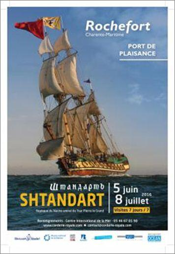
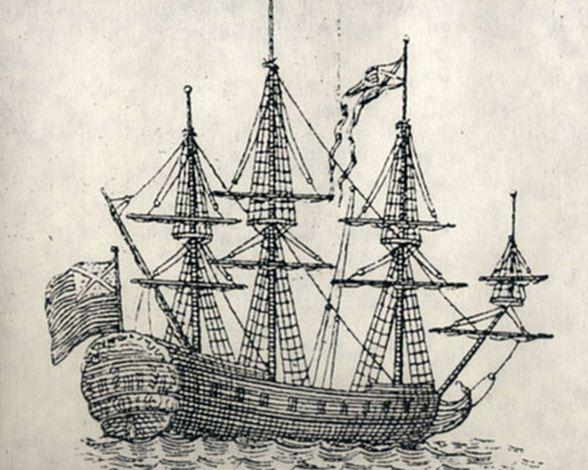
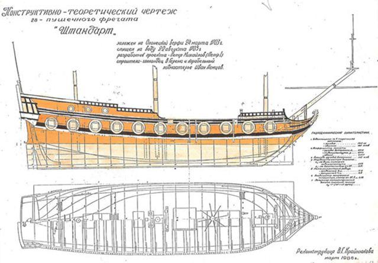
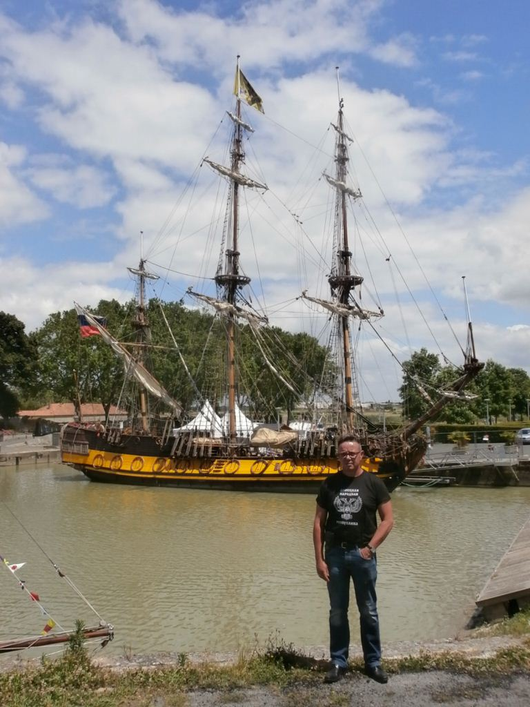
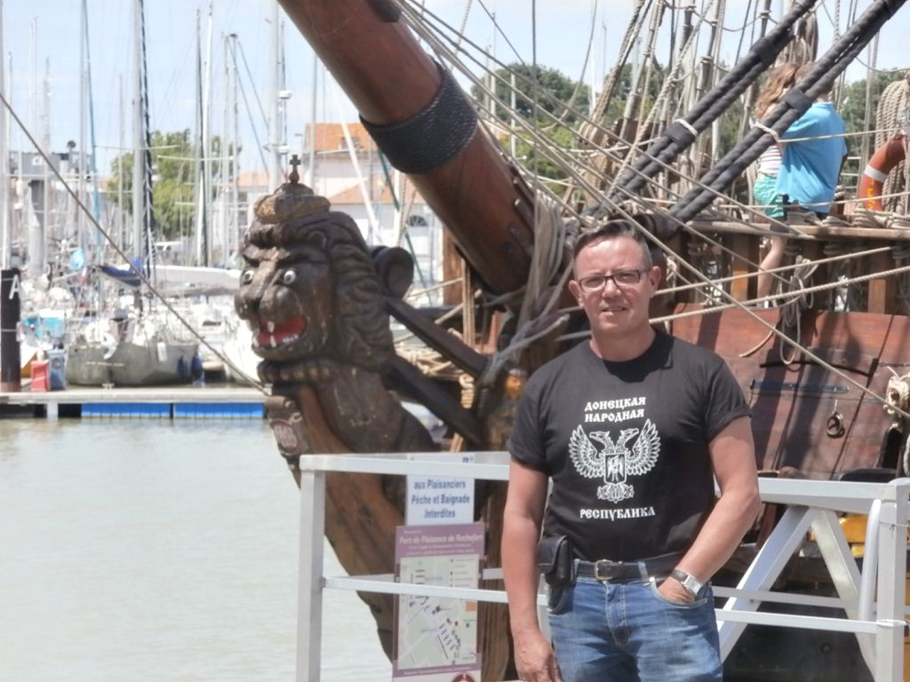

Après avoir accueilli la Nao Victoria1 en 2015 l'Arsenal de Rochefort a retrouvé, du 5 juin au 8 juillet, sa vocation de port d'escale de vieux gréements, en accueillant la frégate russe « Shtandart ». L’occasion était trop belle pour que je ne le visite pas…
Cette frégate rassemble beaucoup de similitudes avec l'Hermione : elle reste un emblème national puissant pour la Russie puisqu'elle fut le navire amiral de Pierre Le Grand. Rochefort, port d’attache de l’Hermione, a déjà accueilli le « Shtandart ». C’est d’ailleurs ce navire qui participa à la formation des équipages de l’Hermione.
La rencontre des deux bâtiments sur la Charente avait donc un relief particulier.
Le navire
En 1703, en même temps que se fonde la ville de Saint-Pétersbourg, une dizaine de navires sont mis en chantiers. Le plus important, la frégate « Shtandart », achevé en à peine 5 mois sous le regard impatient du Tsar, porte 28 canons et devient le vaisseau amiral de la nouvelle flotte Baltique.
Le nom « Shtandart » est lié à l’ouverture d’une nouvelle voie commerciale à travers la mer Baltique. En 1703 Pierre 1er a changé son étendard en ajoutant une quatrième mer sur la carte : la mer Baltique.
En l’honneur du nouvel étendard le premier vaisseau de la flotte Baltique a reçu le nom « Shtandart ».
Le baptême de feu du « Shtandart » a lieu en 1705, quand l’amiral Russe empêche les vaisseaux suédois de passer devant le fort Kronslot et de percer vers Saint-Pétersbourg.
Mais en 1711 le navire tombe en décrépitude suite à l’utilisation de bois humide (pas suffisamment séché). Ainsi une partie du bordage et des couples sont remplacés. Le « Shtandart » rénové continue son service jusqu’en 1719, lorsque Pierre 1er donne l’ordre de le garder ad vitam æternam comme le premier-né de la flotte et monument du génie maritime. La frégate est alors désarmée et amarrée dans le canal Kronverskaya comme musée.
En 1727, Catherine 1ière donne l’ordre de trainer le vaisseau sur la rive et de le restaurer. Mais l’eau et le temps ont gravement endommagé le bateau et quand on essaye de le monter avec des câbles il tombe en pièces. Le « Shtandart » est alors démoli. A cette occasion l’édit suivant est promulgué : « A la mémoire de son nom, que Sa Majesté Pierre le Grand lui a donné, mettez la quille et construisez un nouveau navire ». Pourtant, cet édit n’a été exécuté que depuis peu.
Depuis lors uniquement les yachts impériaux portaient encore le nom « Shtandart ».
En 1994 des jeunes enthousiastes de Saint-Pétersbourg décident de faire revenir le « Shtandart » de Pierre 1er sur les rives de la Neva, en construisant une réplique. Le projet attire de plus en plus de jeunes gens et devient assez vite une association éducative et patriotique. Tout le monde peut participer à la construction et joindre l’équipe unie qui en 2000 a pour la première fois pris la mer à bord du vaisseau reconstruit.
Les plans de Pierre 1er n’existaient plus mais l’historien Viktor Krainyukov a étudié profondément toutes les sources trouvées dans les archives et a pu reconstituer l’image extérieure de ce vaisseau de guerre unique.
Grâce à cela, le nouveau « Shtandart » est une réplique exacte de l’ancien à l’exception de l’intérieur. Là, où à l’époque de Pierre 1er se trouvait la cale, où on gardait des tonneaux d’eau, des câbles de mouillage, des provisions, des boulets et de la poudre, se trouve maintenant l’équipement moderne nécessaire : deux moteurs diesel, une génératrice, des pompes de cale, des citernes ainsi que le carré, la cambuse et les postes d’équipage.
Au-dessus du pont-batterie tout est exact du point de vue historique : les mâts et mâts de flèche, les œuvres dormantes et courantes, le cabestan, les canons, les sculptures de décoration, la barre à roue et l’appareil à gouverner, les échelles, les passerelles, les écoutilles et les lucarnes sont faits comme à l’époque de Pierre 1er.
Habitué à visiter l’Hermione, cette frégate sur laquelle s’était embarqué le marquis de La Fayette en 1780 pour soutenir la guerre d’indépendance américaine contre les Anglais, la visite du Shtandart a été tout aussi magique et m’a permis de découvrir un nouveau pan du patrimoine maritime du XVIIIème siècle.
F.M.
1La Victoria (ou Nao Victoria ou Vittoria) est une caraque espagnole datant du XVIème siècle
Partager cette page